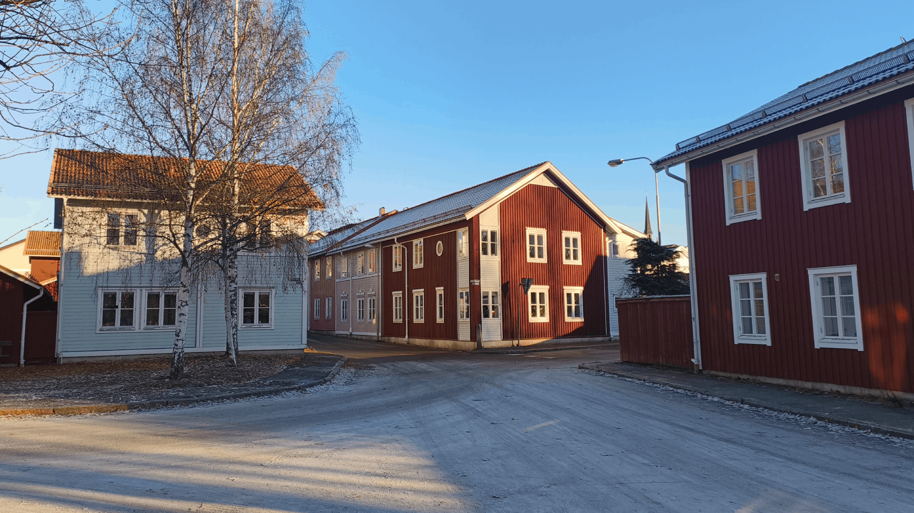
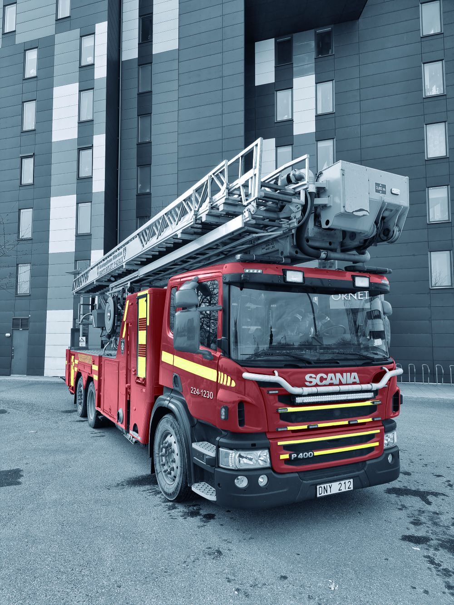
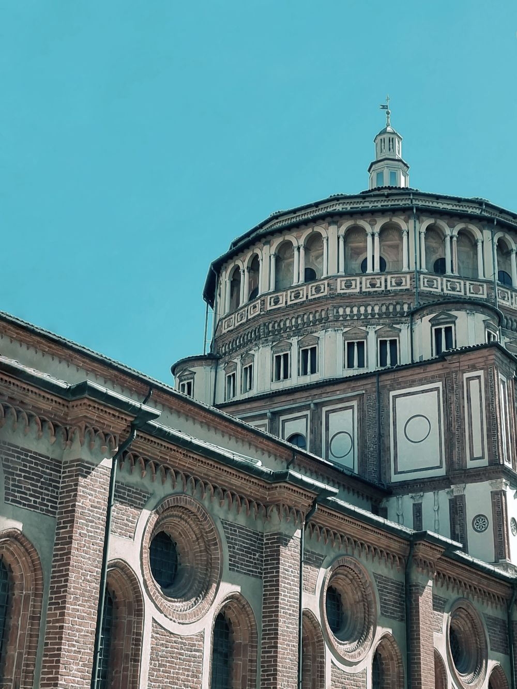

Isacs bilder
Uppgiftsbeskrivning
Syftet med denna uppgift var lära sig grunderna i digital bildbehandling. Målet var att skapa en webbplats med ett antal bilder som skulle behandlas för att se enhetliga ut med varandra och webbplatsen. För att uppnå detta har jag valt ett relativt kallt färgtema till webbplatsen, och färgkorrigerat bilderna för att få en kall turkos/blå nyans.
Bildserie


